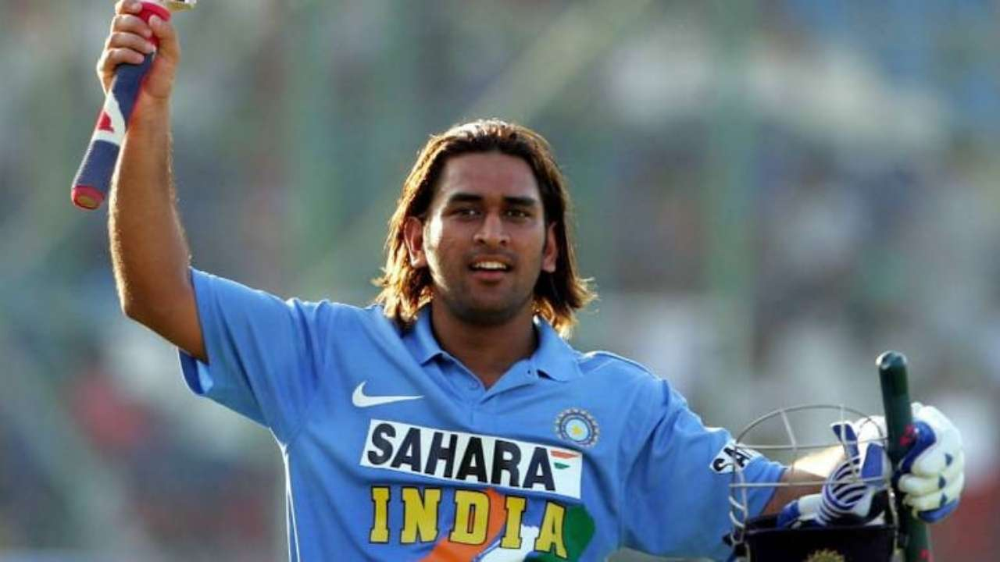

Mahendra Singh Dhoni ( born 7 July 1981), is a former Indian International Cricketer who captained the Indian national team in limited-overs formats from 2007 to 2017 and in Test cricket from 2008 to 2014. Under his captaincy, India won the inaugural 2007 ICC World Twenty20, the 2010 and 2016 Asia Cups, the 2011 ICC Cricket World Cup and the 2013 ICC Champions Trophy. A right-handed middle-order batsman and wicket-keeper, Dhoni is one of the highest run scorers in One Day Internationals (ODIs) with more than 10,000 runs scored and is considered an effective "finisher" in limited-overs formats. He is widely regarded as one of the greatest wicket-keeper batsmen and captains in the history of the game. He was also the first wicket-keeper to effect 100 stumpings in ODI cricket.
Dhoni made his ODI debut on 23 December 2004 against Bangladesh, and played his first Test a year later against Sri Lanka. He has been the recipient of many awards, including the ICC ODI Player of the Year award in 2008 and 2009 (the first player to win the award twice), the Rajiv Gandhi Khel Ratna award in 2007, the Padma Shri, India's fourth highest civilian honour, in 2009 and the Padma Bhushan, India's third highest civilian honour, in 2018. Dhoni was named as the captain of the ICC World Test XI in 2009, 2010 and 2013. He has also been selected a record 8 times in ICC World ODI XI teams, 5 times as captain. The Indian Territorial Army conferred the honorary rank of Lieutenant Colonel to Dhoni on 1 November 2011. He is the second Indian cricketer after Kapil Dev to receive this honour.

Dhoni was born in Ranchi, Bihar (now in Jharkhand), and he hails from a Hindu Rajput family. His paternal village Lwali is in the Lamgara block of the Almora District of Uttarakhand. Dhoni's parents moved from Uttarakhand to Ranchi, where his father Pan Singh worked in junior management positions in MECON. Dhoni has a sister Jayanti Gupta and a brother Narendra Singh Dhoni. Dhoni is a fan of Adam Gilchrist, and his childhood idols were cricket teammate Sachin Tendulkar, Bollywood actor Amitabh Bachchan and singer Lata Mangeshkar. Dhoni studied at DAV Jawahar Vidya Mandir, Shyamali, Ranchi, Jharkhand where he initially excelled in badminton and football and was selected at district and club level in these sports. Dhoni was a goalkeeper for his football team and was sent to play cricket for a local cricket club by his football coach. Though he had not played cricket, Dhoni impressed with his wicket-keeping skills and became the regular wicketkeeper at the Commando cricket club (1995–1998). Based on his performance at club cricket, he was picked for the 1997/98 season Vinoo Mankad Trophy Under-16 Championship and he performed well. Dhoni focused on cricket after his 10th standard. He was a Travelling Ticket Examiner (TTE) at Kharagpur railway station from 2001 to 2003, under South Eastern Railway in Midnapore (W), a district in West Bengal. His colleagues remember him as a very honest, straightforward employee of the Indian Railways. But Dhoni also had a mischievous side to his personality. Once, while staying at the railway quarters, Dhoni and a couple of his friends covered themselves in white bedsheets and walked around in the complex late in the night. The night guards were fooled into believing that there were ghosts moving around in the complex.
In 1998, Dhoni was selected by Deval Sahay to play for the Central Coal Fields Limited (CCL) team. Till 1998 Dhoni, who was in class 12th in school, had played only school cricket and club cricket and no professional cricket. One of the famous episodes, when Dhoni used to play for CCL, was when Deval Sahay used to gift him Rs 50 for each six that he hit in Sheesh Mahal tournament cricket matches. Playing for CCL, he got a chance to bat up the order. He grabbed the opportunity and scored centuries and helped CCL move to the A division. Deval Sahay impressed by his hard-hitting shots and dedication, used his contacts in Bihar Cricket Association to push for his selection in the Bihar team. Deval Sahay, an ex Bihar Cricket Association Vice-President, was the Ranchi District Cricket President at that time and was instrumental in pushing Dhoni to the big stage of Ranchi team, junior Bihar cricket team and eventually senior Bihar Ranji Team for the 1999–2000 season. Within 1 year, Dhoni moved from playing in CCL to the Bihar Ranji team. Dhoni has credited Deval Sahay for instilling discipline in him. Dhoni was included in the Bihar U-19 squad for the 1998–99 season and scored 176 runs in 5 matches (7 innings) as the team finished fourth in the group of six and did not make it to the quarter-finals. Dhoni was not picked for the East Zone U-19 squad (CK Nayudu Trophy) or Rest of India squad (MA Chidambaram Trophy and Vinoo Mankad Trophy). Bihar U-19 cricket team advanced to the finals of 1999–2000 Cooch Behar Trophy, where Dhoni made 84 to help Bihar post a total of 357. Bihar's efforts were dwarfed by Punjab U-19s' 839 with Dhoni's future national squad teammate Yuvraj Singh making 358. Dhoni's contribution in the tournament included 488 runs (9 matches, 12 innings), 5 fifties, 17 catches and 7 stumpings. Dhoni made it to the East Zone U-19 squad for the CK Nayudu trophy but scored only 97 runs in four matches, as East Zone lost all four matches and finished last in the tournament.
Dhoni made his Ranji Trophy debut for Bihar in the 1999–2000 season, as an eighteen-year-old. He made a half century in his debut match scoring 68* in the second innings against Assam cricket team. Dhoni finished the season with 283 runs in 5 matches. Dhoni scored his maiden first-class century while playing for Bihar against Bengal in the 2000/01 season, in a losing cause. Apart from this century, his performance in the 2000/01 season did not include another score over fifty and in the 2001/02 season, he scored just five fifties in four Ranji matches.
The Indian ODI team in the early 2000s saw Rahul Dravid as the wicket-keeper to ensure that the wicket-keeper spot didn't lack in batting talent. The team also saw the entry of wicket-keeper/batsmen from the junior ranks, with talents like Parthiv Patel and Dinesh Karthik (both India U-19 captains) named in the Test squads. With Dhoni making a mark in the India A squad, he was picked in the ODI squad for the Bangladesh tour in 2004/05. Dhoni did not have a great start to his ODI career, getting run out for a duck on debut. In spite of an average series against Bangladesh, Dhoni was picked for the Pakistan ODI series.
Preparations for the 2007 Cricket World Cup improved as India recorded identical 3–1 victories over West Indies and Sri Lanka and Dhoni had averages in excess of 100 in both these series. India unexpectedly crashed out of the World Cup after losses to Bangladesh and Sri Lanka in the group stage. Dhoni was out for a duck in both these matches and scored just 29 runs in the tournament. After the loss to Bangladesh in 2007 Cricket World Cup, the house that Dhoni was constructing in his home-town Ranchi was vandalised and damaged by political activists of JMM. The local police arranged for security for his family as India exited the World Cup in the first round. Dhoni put his disappointing performances in the World Cup behind him by scoring 91* against Bangladesh, after India were left in a tight spot earlier in the run-chase. Dhoni was declared the Man of the Match for his performance, his fourth in ODI cricket. He was also later adjudged the Man of the Series after the third game of the series was washed away. Dhoni had a good Afro-Asia Cup, scoring 174 runs in 3 matches at an average of 87.00, with a blitzkrieg 139 not out off 97 balls, a Man of the Match innings, in the third ODI. Dhoni was named vice-captain of the ODI team for the series against South Africa in Ireland and the subsequent India-England seven-match ODI series. Dhoni, who received a 'B' grade contract in December 2005, was awarded an 'A' grade contract in June 2007. He was also elected as the captain of the Indian squad for the World Twenty20 in September 2007. On 2 September 2007, Dhoni equalled his idol Adam Gilchrist's international record for the most dismissals in an innings in ODI by catching five English players and stumping one.
Following his good one-day performance against Sri Lanka, Dhoni replaced Dinesh Karthik in December 2005 as the Indian teams' Test wicket-keeper. Dhoni scored 30 runs in his debut match, that was marred by rain. Dhoni came to the crease when the team was struggling at 109/5 and as wickets kept falling around him, he played an aggressive innings in which he was the last man to be dismissed. Dhoni made his maiden half-century in the second Test and his quick scoring rate (half century came off 51 balls) helped India set a target of 436 and the Sri Lankans were bowled out for 247. India toured Pakistan in January–February 2006 and Dhoni scored his maiden century in the second Test at Faisalabad. India was in a tight spot when Dhoni along with Irfan Pathan tried to steady the ship, with the team still needing 107 runs to avoid a follow-on. Dhoni played in his naturally aggressive style as he brought up his maiden Test hundred in just 93 balls after scoring the first fifty in just 34 deliveries. Dhoni followed up the century with some prosaic batting performances over the next three matches, one against Pakistan that India lost and two against England that had India holding a 1–0 lead. Dhoni was the top scorer in India's first innings in the third Test at Wankhede Stadium as his 64 helped India post a respectable 279 in reply to England's 400. However, Dhoni and the Indian fielders dropped catches and missed many dismissal chances, including a key stumping opportunity of Andrew Flintoff. Dhoni failed to collect the Harbhajan Singh delivery cleanly as Flintoff went on to make 36 more runs as England set a target of 313 for the home team, a target that India was never in danger of threatening. A batting collapse saw the team being dismissed for 100 and Dhoni scored just 5 runs and faced criticism for his wicket-keeping lapses as well as his shot selection.
Dhoni was a part of India's first-ever Twenty20 international match. He made debut against South Africa in December 2006. He was out for a duck but India won the match. He kept the wickets and effected one catch and a runout. On 12 February 2012, Dhoni made an unbeaten 44 to guide India to their first win over Australia at Adelaide. In the final over, he hit a monstrous six which travelled 112 meters off the bowling of Clint McKay. During the post-match presentation, he described this six as more important than the one he hit during the ICC World Cup final in 2011. He was named as captain and wicketkeeper of the 'Team of the Tournament' for the 2014 T20 World Cup by the ICC.

Dhoni was contracted by the Chennai Super Kings for US$1.5 million. This made him the most expensive player in the IPL for the first season auctions. Under his captaincy, Chennai Super Kings won the 2010 and 2011 and 2018 Indian Premier League titles and the 2010 and 2014 Champions League T20 titles. After the suspension of CSK for two years, he was bought by Rising Pune Supergiant for US$1.9 million in 2016, and was named captain. However, his team finished in 7th place. In 2017, his team reached the final, where they lost to Mumbai Indians. In the 2018 IPL season, Chennai Super Kings returned to IPL, and Dhoni was again selected to lead the franchise. Dhoni scored 455 runs in the tournament and led his side to their third IPL title.
Dhoni is a right-handed batsman and wicket-keeper. Initially, Dhoni appeared as a lower-order attacking batsman but he gradually changed his playing style to deal with high-pressure scenarios and his growing responsibility as a captain. He is a powerful hitter of the ball and is one of the fastest men in running between the wickets. He made use of the helicopter shot technique, taught to him by fellow player and childhood friend Santosh Lal His wicket-keeping skill is widely praised by cricket experts.[citation needed] He has a world record for the highest number of stumpings by any wicket-keeper. He is the main wicket-keeper in the team but he occasionally bowls as a medium-fast bowler.